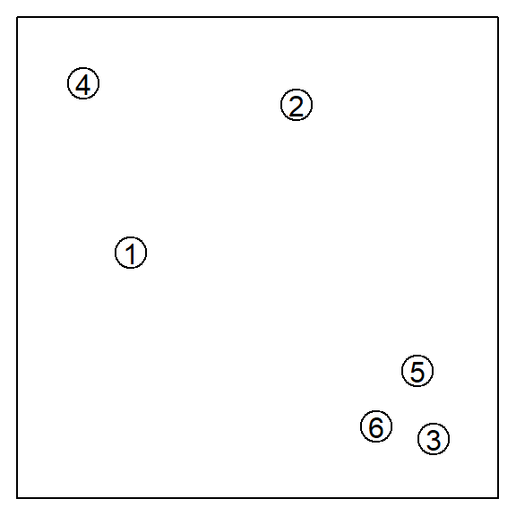
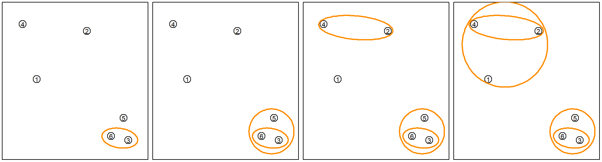
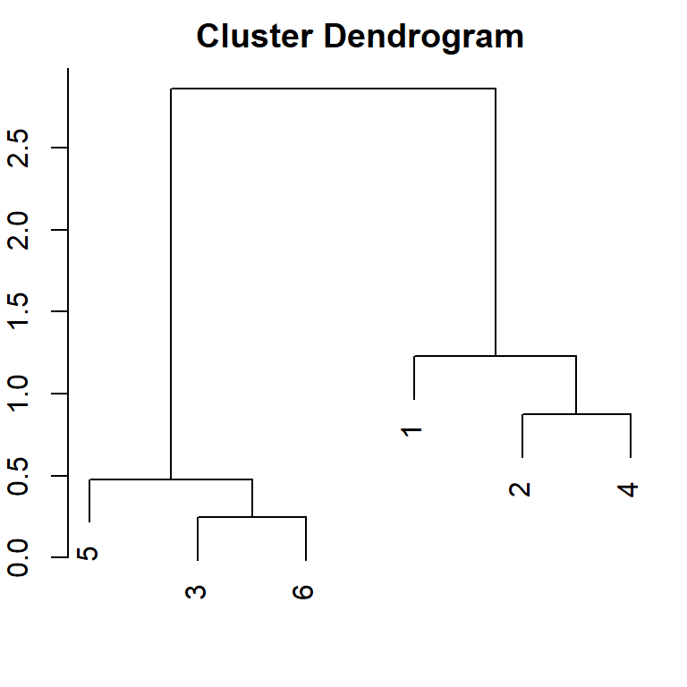
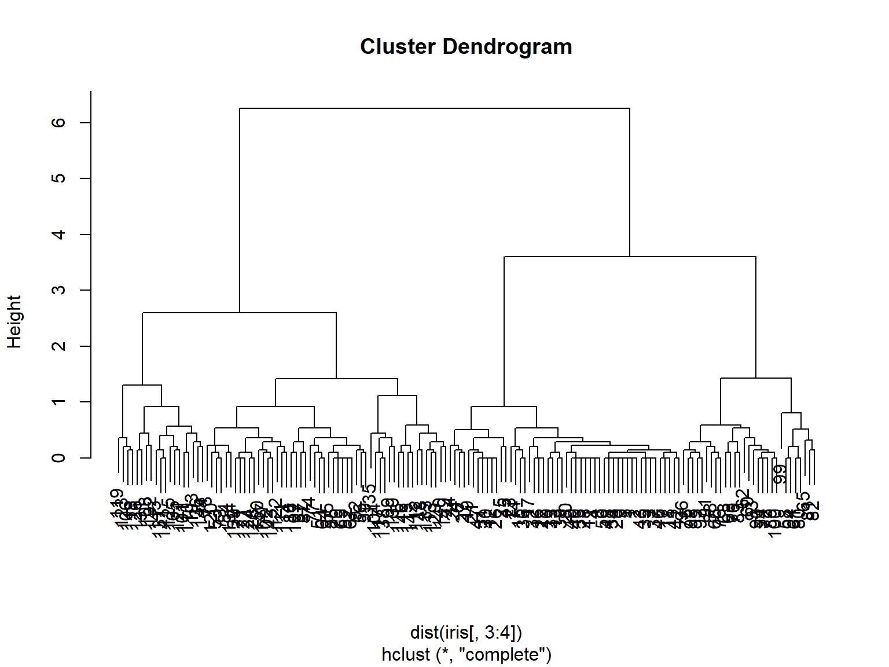
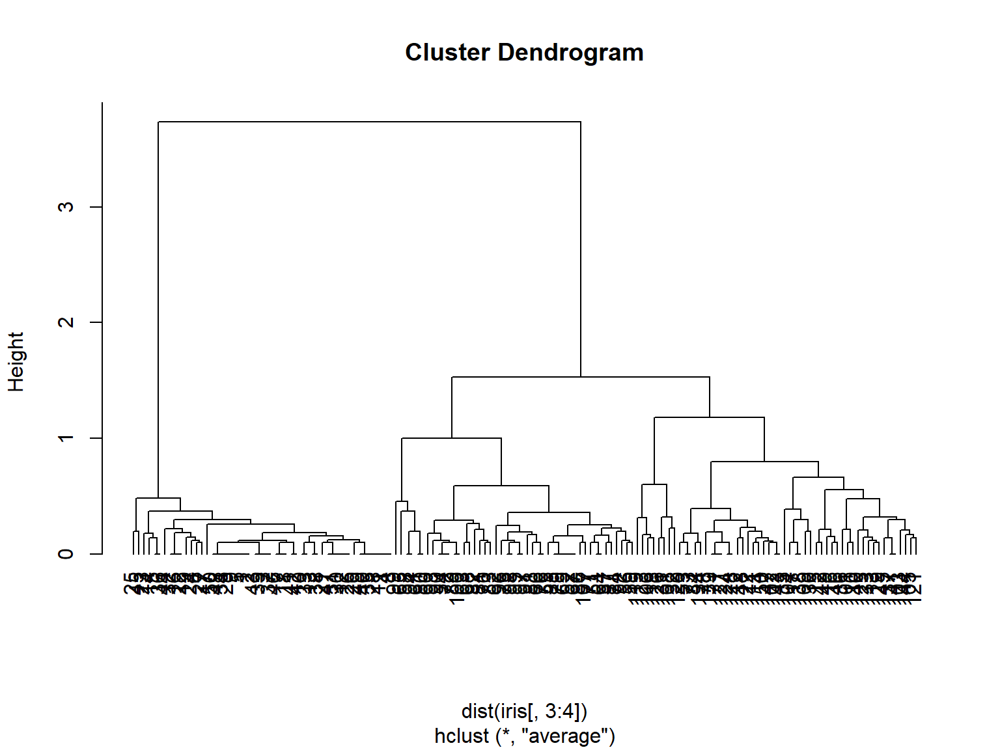
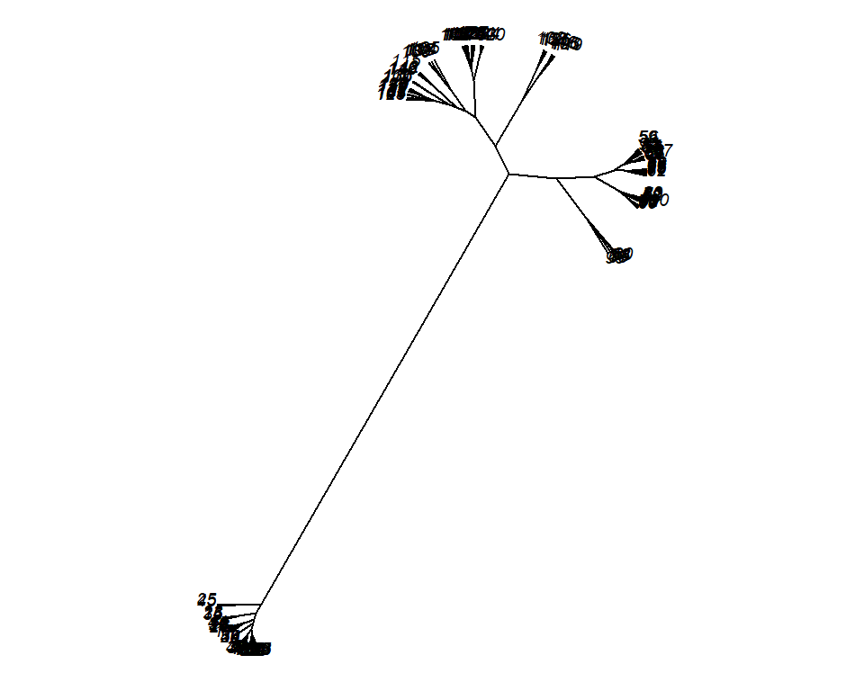
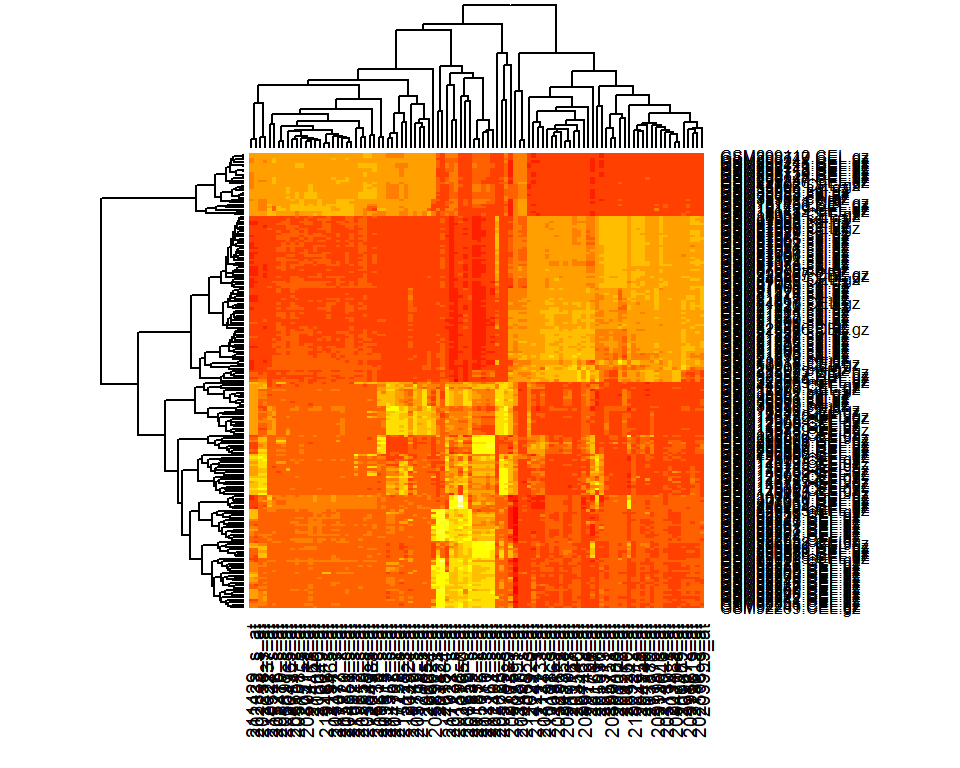

Chapter 7 Hierarchical Clustering
7.1 Basic Concepts
Suppose we have a set of six observations:

The goal is to progressively group them together until there is only one group.

During this entire process, only the pair-wise distances are used to determine which observations are grouped. Hence, the R function hclust() will take a distance matrix and perform the clustering. A distance matrix is an \(n \times n\) matrix. As a default, we can use the Euclidean distance.
# the Euclidean distance can be computed using dist()
as.matrix(dist(x))## 1 2 3 4 5 6
## 1 0.000000 1.2294164 1.7864196 1.1971565 1.4246185 1.5698349
## 2 1.229416 0.0000000 2.3996575 0.8727261 1.9243764 2.2708670
## 3 1.786420 2.3996575 0.0000000 2.8586738 0.4782442 0.2448835
## 4 1.197156 0.8727261 2.8586738 0.0000000 2.4219048 2.6741260
## 5 1.424618 1.9243764 0.4782442 2.4219048 0.0000000 0.4204479
## 6 1.569835 2.2708670 0.2448835 2.6741260 0.4204479 0.0000000We then use this distance matrix in the hierarchical clustering algorithm.
# the Euclidean distance can be computed using dist()
as.matrix(dist(x))## 1 2 3 4 5 6
## 1 0.000000 1.2294164 1.7864196 1.1971565 1.4246185 1.5698349
## 2 1.229416 0.0000000 2.3996575 0.8727261 1.9243764 2.2708670
## 3 1.786420 2.3996575 0.0000000 2.8586738 0.4782442 0.2448835
## 4 1.197156 0.8727261 2.8586738 0.0000000 2.4219048 2.6741260
## 5 1.424618 1.9243764 0.4782442 2.4219048 0.0000000 0.4204479
## 6 1.569835 2.2708670 0.2448835 2.6741260 0.4204479 0.0000000 # pass the distance matrix to hclust()
# we use a complete link function
hcfit <- hclust(dist(x), method = "complete")
par(mar=c(2, 2, 2, 1))
plot(hcfit)
Hence, the merging process is exactly the same as we demonstrated previous. The height of each split represents how separated the two subsets are. Selecting the number of clusters is still a tricky problem. Usually, we pick a cutoff where the height of the next split is short. Hence, the above example fits well with two clusters.
7.2 Example 1: iris data
For this example, we use all variables in the distance calculation and still use the default complete linkage.
iris_hc <- hclust(dist(iris[, 3:4]))
plot(iris_hc) 
This does not seem to perform very well, considering that we know the true number of classes is three. Hence, let’s try some other linkage functions.
iris_hc <- hclust(dist(iris[, 3:4]), method = "average")
plot(iris_hc, hang = -1) 
This looks better. Now we can also consider using other approaches to plot this result. For example, the ape package provides some interesting choices.
library(ape)
plot(as.phylo(iris_hc), type = "unrooted", cex = 0.6, no.margin = TRUE)
We can also add the true class colors to the plot. This plot is motivated by the dendextend package vignettes.

Of course in a realistic situation, we wouldn’t know what the true class is.
7.3 Example 2: RNA Expression Data
We use a tissue gene expression dataset from the tissuesGeneExpression library, available from bioconductor. I prepared the data to include only 100 genes. You can download the data from the course website. If we simply plot the data using a heatmap. By default, a heatmap uses red to denote higher values, and yellow for lower values. Note that we first plot the data without organizing the columns or rows. The data is also standardized based on columns (genes).
load("data/tissue.Rda")
dim(expression)## [1] 189 100 table(tissue)## tissue
## cerebellum colon endometrium hippocampus kidney liver placenta
## 38 34 15 31 39 26 6 head(expression[, 1:3])## 211298_s_at 203540_at 211357_s_at
## GSM11805.CEL.gz 7.710426 5.856596 12.618471
## GSM11814.CEL.gz 4.741010 5.813841 5.116707
## GSM11823.CEL.gz 11.730652 5.986338 13.206078
## GSM11830.CEL.gz 5.061337 6.316815 9.780614
## GSM12067.CEL.gz 4.955245 6.561705 8.589003
## GSM12075.CEL.gz 10.469501 5.880740 13.050554 heatmap(scale(expression), Rowv = NA, Colv = NA)
hierarchical clustering may help us discover interesting patterns. If we reorganize the columns and rows based on the clusters, then it may reveal underlying subclass of issues, or subgroup of genes.
heatmap(scale(expression))
Note that there are many other R packages that produce more interesting plots. For example, you can try the heatmaply package.